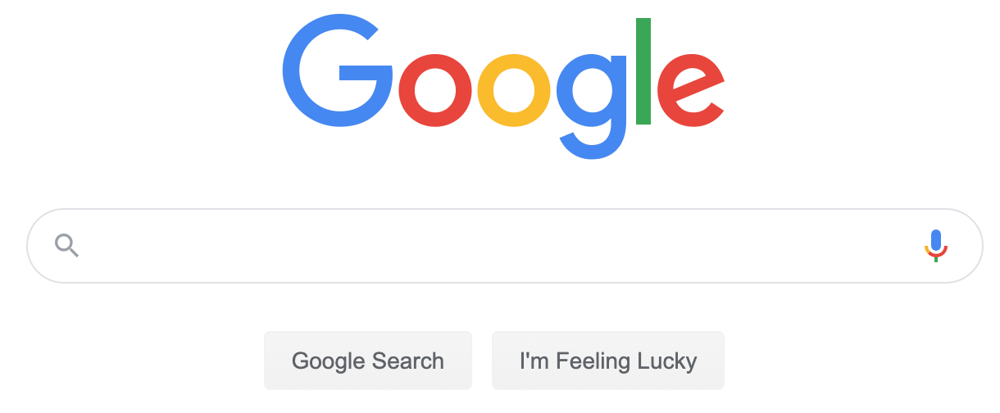
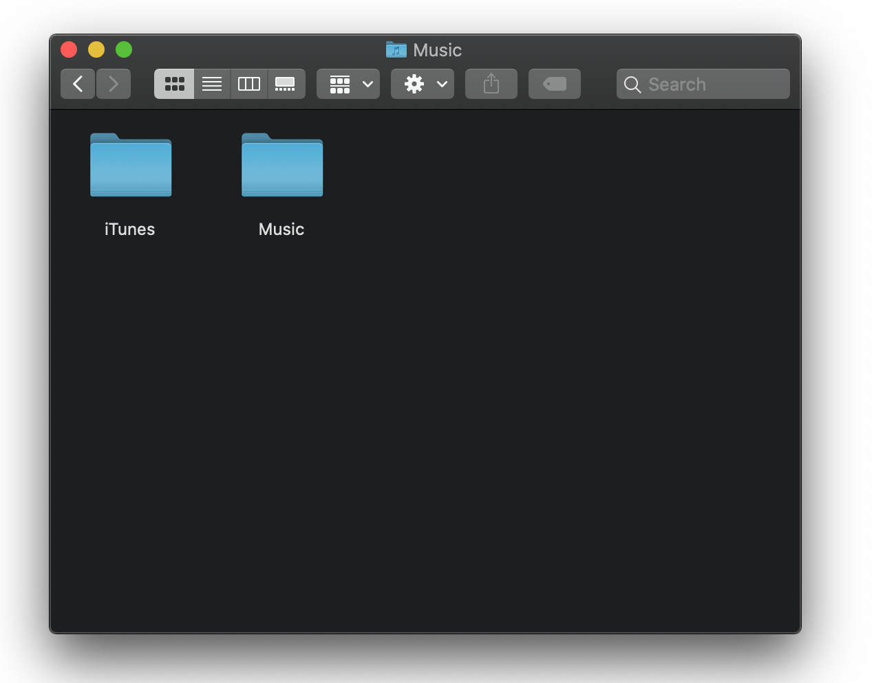
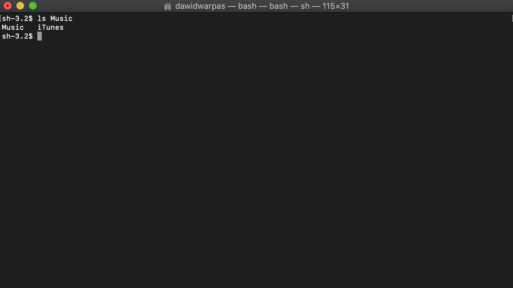
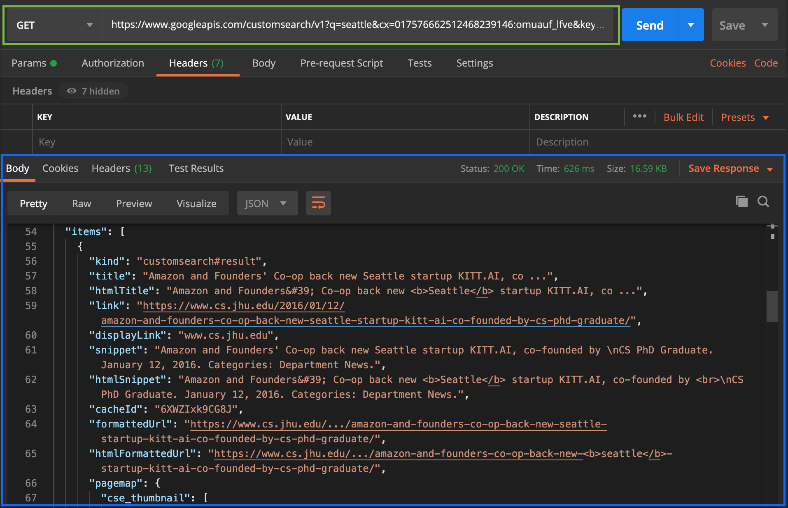

What ways to interact with mobile apps are there?
What is your favourite way to use the Google Calendar app? How about other apps? Is your answer “duh, the normal way - on my phone or laptop”?
If you haven’t taken the time to learn programming, chances are you didn’t run into any alternatives. I know only a few examples of non-programmers who use CLIs or APIs. But this could just be my limited exposure talking. How often do you think about methods of using your favourite phone app?
Imagine you communicated with other people only by grunting and pointing your fingers. It’s far from enough for having a meaningful exchange of ideas or feelings. But it’s perfect for warning someone about a nearby threat and it’d probably be sufficient to get you food and shelter nowadays. I think it’s a good analogy for using computer systems. There is more than one way to do it. I’d like to expose you to a few methods, that may seem unfamiliar. Hopefully they’ll shift your perspective of what you can do with your computers, robots and favourite apps. Let’s get started!
The ones you’re used to - visual interfaces 😎
You’ve seen visual User Interfaces hundreds of times. That’s the main way we interact with technology. One of the simplest example of an UIs is the front page of Google Search.
Just type what you want to find, press “Enter” or click one of two buttons. Limiting or hiding options is the name of the game here.
Some common characteristics of visual UIs are:
- Main design goal - Simplicity - they are designed to be intuitive
- Input method - You interact with this type of interface primarily with touch screens, mouse and keyboard. Usually in that order of importance.
- Response - The interface responds visually - it redirects you, draws something, flashes or throws a spinner on the screen to ease wait time
- Learning curve - they’re usually easy at the start. The more features they have the more documentation/tutorials they require.
The same broad list would apply to the vast majority of GUIs - graphical user interfaces. That would be nerd-speak for your Windows, Mac or Linux applications, as well as phone and tablet apps. Here’s an example:
You might not be familiar with it if you’re used to Windows. But it’s similar enough, isn’t it? I’m tempted to talk at length about the other side of the learning curve - the daunting and difficult to understand apps bursting with features. For now, if you’re interested take a look at this Reddit thread and check out the Blender UI:

For now let’s leave the highly visual world of GUIs, Web UIs and move to an older, simpler time…
The text-based world ⌨️
Command Line Interface. Anyone who tried to learn programming probably came across this beast at some point. I’m fairly sure it made a bad first impression.
This image shows the view of the exact same folder as the Finder GUI image we’ve just looked at. It’s a bit less obvious and you have to know that in order to see the list of files inside the “Music†folder, you have to type ls Music. It’s not written anywhere on the screen, you just have to know. Oh, and it won’t work in the old Windows command line terminal. To get similar output there you need to type dir Music. How are you supposed to figure that out on your own?
Some common characteristics of CLIs are:
- Main design goal - They strive to be fast and powerful. All that with the fewest possible inputs.
- Input method - Keyboard. Almost exclusively. You can use the mouse for some tasks but make no mistake - that’s definitely the secondary input device with a CLI.
- Response - The interface responds with text. Luckily the text can have some colour and nowadays emojis are also an option 🥳
- Learning curve - The basics of CLI use are not intuitive in my opinion. Getting over that initial hump is difficult without a good tutorial, book, mentor or technical manual. Most programs give you access to built-in documentation. The more you know the easier it gets. With enough practice it’s the fastest interface to use for most of your Operating System needs.
The emoji in the example above do little to alleviate the pain of learning the ropes with the Command Line. The argument that “it gets better later†is hardly convincing in this day and age. As one British games critic once said about something, that gets good 20 hours in - “You know that’s not really a point in its favour, right? Put your hand on a stove for 20 hours and yeah, you’ll probably stop feeling the pain, but you’ll have done serious damage to yourself.”
Let’s set the initial difficulty aside for a moment. Consider this - whether you type commands using a CLI or click around your windows the results are the same. A command for renaming a file - mv tumbleweed.gif tumble.gif - does essentially the same thing as clicking Rename and using tumble.gif as the new file name. Being able to do the same tasks with CLI as with other methods shows a very important point. Computers translate your clicks, swipes and button presses to some sort of text, that gets further translated to machine language - ones and zeroes.
The vast majority of everything you use your computer for with visual interfaces can be done with the command line interface. Let that sink in.
CLI used to be the default way to interact with the computer before Windows even existed. The key takeaway here is for you to know something like that is still there under the proverbial hood.
The method apps use to talk to each other 📲
We’ve arrived at the API or Application Programming Interface, which suggests it’s the one for programmers. But I think the name is misleading. It’s the way applications use to communicate with one another. And the meaning behind messages they send can be understood. Take a look:
- “Hey Google Search, show me the results for a search for ‘Seattle’.”
- “Hey Twitter, I please post this message from my user account.”
- “Hey Google Calendar, give me a list of events scheduled for next Monday in my calendar”.
- “Hey Trello, I would like for you to create a card in my project and put it in the ‘In Progress’ column.”
- “Hey Google Calendar, create a calendar event at 9:30 on Thursday”.
- “Hey Toggl, start a timer tagged as ‘_work_’, would you?”.
You don’t need a college degree in Computer Science to understand what the responses to those requests are going to mean. Sure, the language they are encoded in is a bit quirky but nobody expected you to read and understand Shakespeare’s Hamlet in its entirety during your first English lesson, right?
Let’s take a look at a small example of an API interaction with an existing online service 🙃
There are two messages here:
- The request I sent - in the green box
- The response from the API - in the blue
Those messages aren’t pretty. To the untrained eye it’s far from understandable English sentences and closer to math equations or even random strings of characters with some English words thrown in for giggles. At least at the first glance. But I bet you could understand parts of it. Which service does it access? What do you think it does? What did the service respond with? What can you deduce from the URL in the green box? Please take 10-15 seconds to think about it.
Some common characteristics of APIs are:
- Main design goal - to enable various apps to talk to each other.
- Input method - text in the format accepted by the API. Details depend on the type of API. But regardless if it’s REST or GraphQL, JSON, XML or another buzzword, you send a message in some type of text format.
- Response - text in a format similar to the input message.
- Learning curve - they’re a bit more difficult than CLIs in this respect. There are some commonalities between APIs that you can learn to recognise and use. But every API is different enough that you probably shouldn’t skip reading its manual.
Hover over the following box to see the answer to the question posed above. The exchange in the example above shows a “Seattle†query to Google Search. If you'd type that into Google, the response you would get would be similar.
The response you get depends on the request you send. Without any prior knowledge it’s difficult to guess what request you should send to get the desired response. Luckily with popular APIs you don’t have to guess. The example above is based on instructions from Google’s developer docs. The documentation specifies steps for interacting with it. “Click here to get the API key”, “send us your key and the search query term and we’ll send you the query result in the JSON format”. You can figure out what to send by reading the documentation and monitoring responses to the test messages you send.
API is a precise way of communicating. Once you figure out how a particular API endpoint works, you can rely on it to give you a predictable response.
In conclusion
You’ve seen a few types of interfaces by now. They were sorted from the most intuitive visual UIs to the least intuitive APIs. The text based world seems to have a steeper barrier to entry and requires reading documentation for basic usage. Technical manuals rarely are an invigorating read.
When you want to tell your application to do something you can use either one of these interfaces. You can tell Google Calendar to add an event on Friday at 11:00 AM in many ways:
- Click around in the browser on a laptop or desktop computer
- Touch and swipe in the mobile app on a phone or tablet
- Use one the many Command Line interfaces
- Have Apple Calendar or Fantastical copy it through an API integration
The end result is still the same - there will be an event on Friday at 11:00 AM in your Google Calendar. If there’s one key takeaway I have for you here, it’s this - there is more than one way to interact with computer systems.
Communicating with computers through various interfaces is, in many ways, like interacting with people by either speaking, hand gestures or showing your emotions. The more ways of expression you can use and understand, the richer your interactions. Wouldn’t you agree?
I’d love to hear your thoughts on the matter. I’m working on a comment section for the blog. But while it’s unavailable, please send me an email at contact@warpas.blog.
Thank you for reading! ❤️